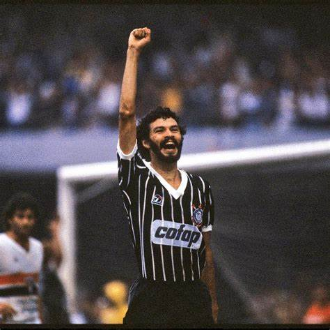
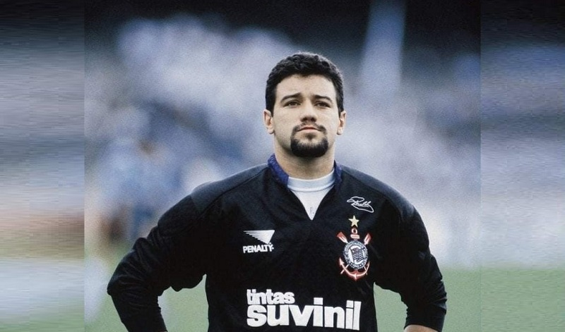

O Sport Club Corinthians Paulista, fundado em 1 de Setembro de 1910, é um dos clubes de futebol mais
tradicionais e bem-sucedidos do Brasil.
Com uma história repleta de conquistas, o Corinthians é frequentemente apontado como um dos favoritos
para vencer competições nacionais
e continentais, como o Campeonato Brasileiro e a Copa Libertadores. Entre os muitos jogadores que
deixaram um legado inesquecível no clube,
cada um, à sua maneira, contribuiu para a construção de uma história rica em emoções, conquistas e
paixão, consolidando o Corinthians
como uma potência do futebol sul-americano e mundial. Cinco jogadores se destacaram pela habilidade,
liderança e amor ao Corinthians:

• Sócrates

• Rivelino

• Marcelinho Carioca

• Neto

• Ronaldo Giovanelli
Informações sobre o Clube
Data de Fundação: 01 de Setembro de 1910
Número de Torcedores: 29,4 milhões
Estádio:Neo Química Arena
Presidente atual: Augusto Melo
Mascote: Mosqueteiro
Maior rival: Palmeiras
Maior torcida organizada: Gaviões da Fiel (115 mil associados)
Hino do Corinthians
Salve o Corinthians
O campeão dos campeões
Eternamente
Dentro dos nossos corações
Salve o Corinthians
De tradições e glórias mil
Tu és orgulho
Dos desportistas do Brasil
Teu passado é uma bandeira
Teu presente, uma lição
Figuras entre os primeiros
Do nosso esporte bretão
Corinthians grande
Sempre altaneiro
És do Brasil
O clube mais brasileiro!